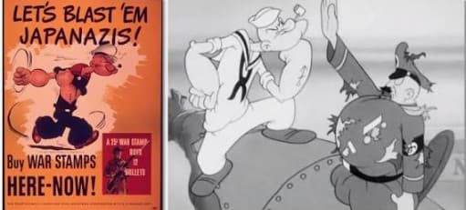
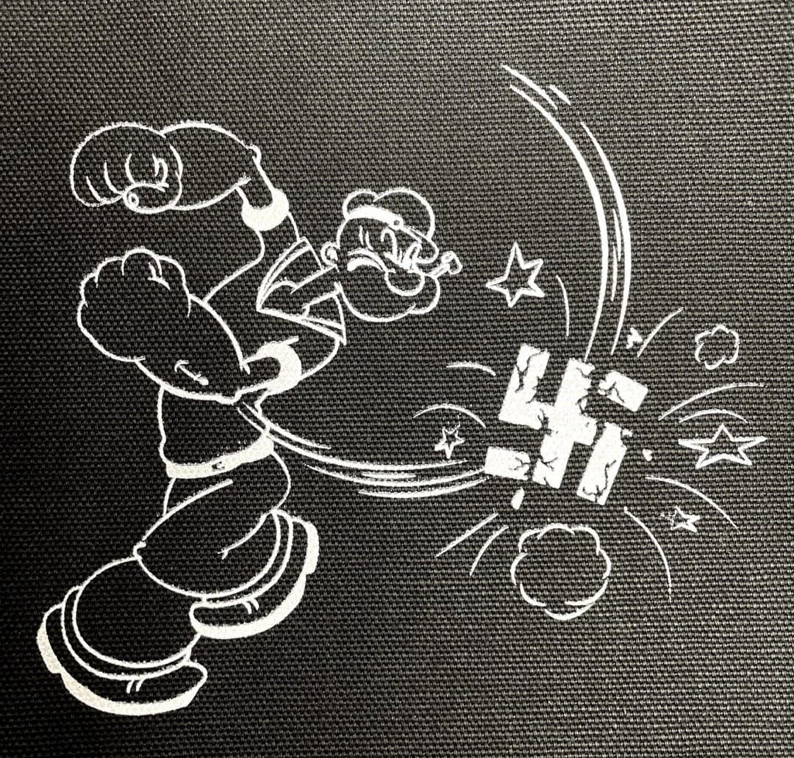
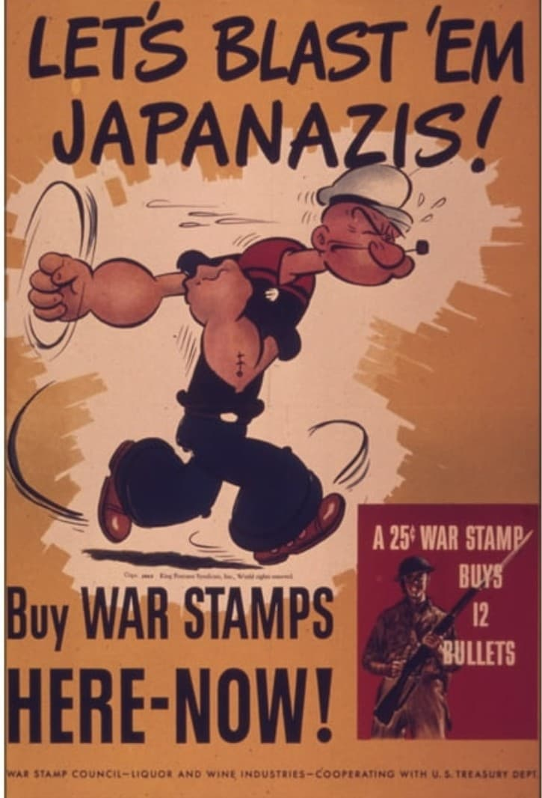
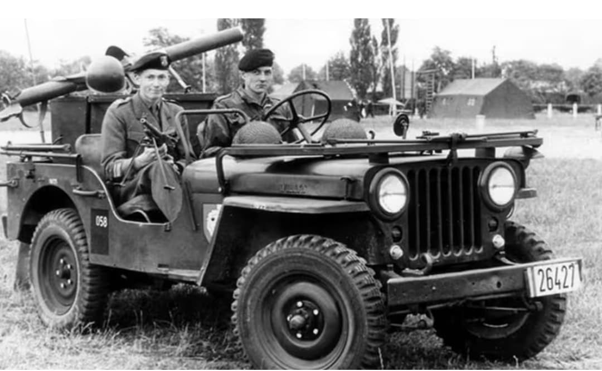

Introduction
Pendant la Seconde Guerre mondiale, les États-Unis utilisent massivement la culture populaire pour soutenir l’effort de guerre. Parmi les personnages mobilisés, Popeye occupe une place unique : un marin simple, drôle, mais transformé en symbole patriotique.
Les studios produisent des épisodes spécialement conçus pour la guerre : caricatures de l’ennemi, messages patriotiques, encouragements à l’effort national. Popeye devient un outil de propagande culturelle.

Popeye contre l’Axe
Dans plusieurs dessins animés produits entre 1941 et 1945, Popeye affronte des soldats nazis et japonais caricaturés. Ces épisodes servent à renforcer l’idée d’un ennemi ridicule, vaincu par la force américaine.
Les cartoons sont diffusés dans les cinémas avant les actualités de guerre, devenant un outil psychologique destiné à soutenir le moral des civils et des soldats.

Popeye et l’effort de guerre américain
Popeye est utilisé pour encourager l’achat de bons de guerre, le recyclage du métal, la prudence contre les espions et le soutien aux soldats. Le personnage devient un vecteur de messages civiques simples et efficaces.
Les épinards, symbole de sa force, sont parfois associés à la production agricole américaine : « Produire plus, c’est aider la victoire ».

Eugene the Jeep et la Jeep militaire
Dans l’univers de Popeye apparaît un petit animal jaune, Eugene the Jeep, capable de se téléporter, de passer partout et de résoudre n’importe quel problème. Les soldats américains adoptent ce nom pour la Willys MB, un véhicule léger tout-terrain qui semble franchir tous les obstacles.
Le surnom « Jeep » devient un symbole de la mobilité américaine. Ce lien entre un cartoon et un véhicule militaire illustre la puissance culturelle des États-Unis pendant la guerre.


Frank “Rocky” Fiegel : l’homme qui a inspiré Popeye
Le personnage de Popeye est créé en 1929 par le dessinateur américain Elzie Crisler Segar. Pour façonner son marin bagarreur, Segar s’inspire d’un véritable homme : Frank “Rocky” Fiegel.
Rocky était un marin connu pour sa pipe, son œil plissé, sa mâchoire proéminente et son tempérament combatif. Segar l’observait régulièrement dans les bars du port, et a repris son apparence et son attitude pour donner vie au célèbre Popeye.
Rocky n’a jamais dessiné Popeye, mais son visage et son caractère sont devenus l’un des symboles culturels les plus utilisés dans la propagande américaine durant la Seconde Guerre mondiale.

Page du Musée HOP WW2 – Section Propagande américaine